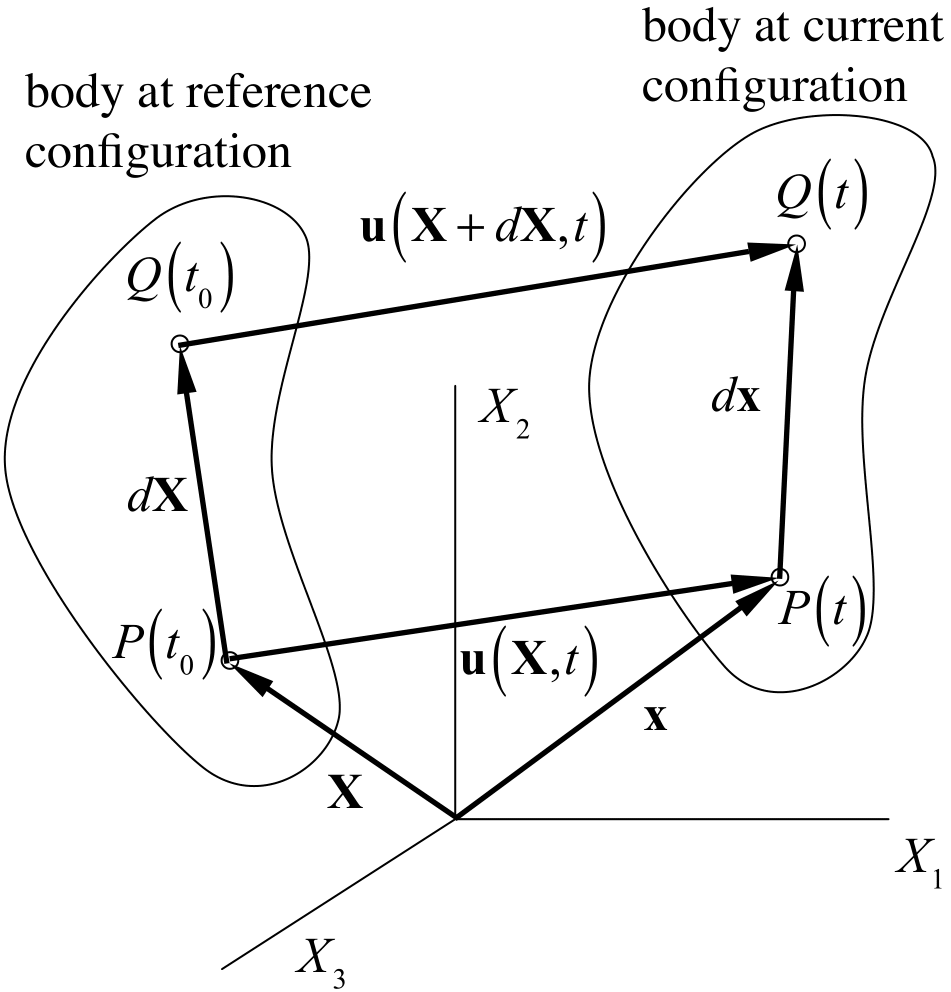
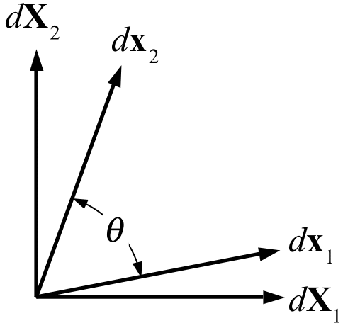
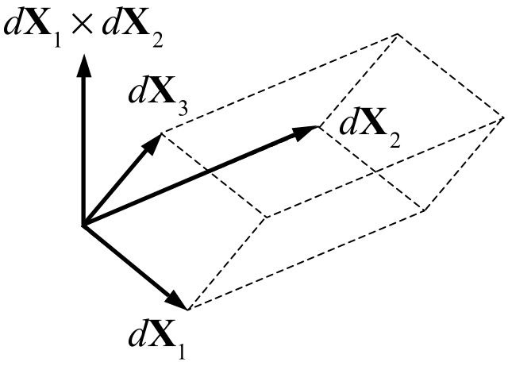

2.5 Kinematics of the Continuum¶
Motion and Path Lines¶
At any instant of time \(t\), the motion of a material particle \(P\) in the continuum is given by the function

Figure 1. Kinematics of the continuum.
where \(\mathbf{X}\) is the reference position, at some reference time \(t_{0}\), of the material particle \(P\) currently located at the spatial location \(\mathbf{x}\). This motion describes the path line of the particle that starts at \(\mathbf{X}\) at \(t=t_{0}\) and passes through \(\mathbf{x}\) at time \(t\). At a subsequent time \(t^{\prime}\), the material particle passing through \(\mathbf{x}\) would have originated at a different location \(\mathbf{X}^{\prime}\) at \(t_{0}\), so that \(\mathbf{x}=\boldsymbol{\chi}\left(\mathbf{X}^{\prime},t^{\prime}\right)=\boldsymbol{\chi}\left(\mathbf{X},t\right)\). The material particle \(P\) is uniquely identified by its position \(\mathbf{X}\) in the reference configuration. Therefore, any function \(f\) associated with each material point \(\mathbf{X}\), such as density, temperature, velocity, etc., may be expressed as \(f=\hat{f}\left(\mathbf{X},t\right)\) in the material (or Lagrangian) frame. Alternatively, the same function may be expressed in terms of the spatial position \(\mathbf{x}\) through which the material particle originating at \(\mathbf{X}\) passes at time \(t\). In that case, \(f=\tilde{f}\left(\mathbf{x},t\right)\) expresses this function in the spatial (or Eulerian) frame. Importantly, since the function \(f\) is associated with the material, its time rate of change as the material moves is called the material time derivative of \(f\). The material time derivative of \(f\) in the material frame is given by
Therefore, the velocity \(\mathbf{v}\left(\mathbf{X},t\right)\) of the particle \(P\) is defined in the material frame as the material time derivative \(\dot{\boldsymbol{\chi}}\left(\mathbf{X},t\right)\) of the motion,
The material time derivative of \(f\) in the spatial frame may be evaluated by using the chain rule on \(f=\tilde{f}\left(\mathbf{x},t\right)\equiv f\left(\boldsymbol{\chi}\left(\mathbf{X},t\right),t\right)\), thus
Using Eq.\eqref{eq75} and recognizing that \(\partial\tilde{f}/\partial\boldsymbol{\chi}\equiv\partial\tilde{f}/\partial\mathbf{x}=\grad\tilde{f}\), this expression may be rewritten as
We used the operator \(D\left(\cdot\right)/Dt\) to emphasize that this expression represents the material time derivative of \(f\) in the spatial frame.
For a given particle \(P\), the actual value of the function \(f\) must be the same in the material and spatial frames, thus \(f=\hat{f}\left(\mathbf{X},t\right)=\tilde{f}\left(\mathbf{x},t\right)\). Similarly, its material time derivative must have the same value in either frame, \(\dot{f}=\frac{\partial\hat{f}}{\partial t}=\frac{D\tilde{f}}{Dt}\). For notational convenience, we drop the caret and tilde symbols and assume from the context that \(f\left(\mathbf{X},t\right)\equiv\hat{f}\left(\mathbf{X},t\right)\) and \(f\left(\mathbf{x},t\right)\equiv\tilde{f}\left(\mathbf{x},t\right)\).
Deformation Gradient¶
For a continuum, the increment in motion between the neigboring points \(\mathbf{X}\) and \(\mathbf{X}+d\mathbf{X}\) at a given time \(t\) is given by
Since the differentiation of \(\boldsymbol{\chi}\left(\mathbf{X},t\right)\) is performed with respect to \(\mathbf{X}\), we denote this gradient as \(\Grad\equiv\partial\left(\cdot\right)/\partial\mathbf{X}\). In particular,
is known as the deformation gradient. It follows from this relationship that a material element \(d\mathbf{X}\) of solid constituent deforms into the material element \(d\mathbf{x}\) at the current time \(t\) such that \(d\mathbf{x}=\mathbf{F}\cdot d\mathbf{X}\).
The length of the element, \(ds\), is given by
where
is the right Cauchy-Green deformation tensor. Note that \(\mathbf{C}^{T}=\left(\mathbf{F}^{T}\cdot\mathbf{F}\right)^{T}=\mathbf{F}^{T}\cdot\mathbf{F}=\mathbf{C}\), thus \(\mathbf{C}\) is symmetric.
Let the material element \(d\mathbf{X}\) be of length \(dS\) and directed along the unit normal \(\mathbf{n}_{r}\), \(d\mathbf{X}=dS\mathbf{n}_{r}\). Upon deformation, we have \(d\mathbf{x}=\mathbf{F}\cdot d\mathbf{X}=dS\mathbf{F}\cdot\mathbf{n}_{r}\) and the length of the element in this deformed configuration is given by \(ds\) where
The length of the element in the current configuration relative to its length in the reference configuration is given by
where \(\lambda_{n}\) is the relative change in length of the material element \(d\mathbf{X}\) which is oriented along \(\mathbf{n}\). \(\lambda_{n}\) is known as the stretch ratio along \(\mathbf{n}\). Note that \(\lambda_{n}^{2}=\mathbf{n}_{r}\cdot\mathbf{C}\cdot\mathbf{n}_{r}\) is the normal component of \(\mathbf{C}\) along \(\mathbf{n}_{r}\). If we let \(d\mathbf{x}=ds\,\mathbf{n}\), it follows from \(d\mathbf{x}=\mathbf{F}\cdot d\mathbf{X}\) that
Now consider two material elements \(d\mathbf{X}_{m}=dS_{m}\mathbf{m}_{r}\) and \(d\mathbf{X}_{n}=dS_{n}\mathbf{n}_{r}\). They each transform according to \(d\mathbf{x}_{m}=\mathbf{F}\cdot d\mathbf{X}_{m}\) and \(d\mathbf{x}_{n}=\mathbf{F}\cdot d\mathbf{X}_{n}\) and their dot product produces
or equivalently,
where \(d\mathbf{x}_{m}=ds_{m}\mathbf{m}\) and \(d\mathbf{x}_{n}=ds_{n}\mathbf{n}\). Note that we may write \(\mathbf{m}\cdot\mathbf{n}=\cos\theta=\sin\gamma\), where \(\theta\) is the angle between \(d\mathbf{x}_{m}\) and \(d\mathbf{x}_{n}\) and \(\gamma=\frac{\pi}{2}-\theta\) is its complementary angle (Figure Figure (2.5)), so that
Now consider the case where \(\mathbf{m}_{r}\cdot\mathbf{n}_{r}=0\), i.e., the material elements \(d\mathbf{X}_{m}\) and \(d\mathbf{X}_{n}\) are orthogonal, so that \(\mathbf{n}_{r}\cdot\mathbf{C}\cdot\mathbf{m}_{r}=C_{mn}\) where \(C_{mn}\) is a shear component of \(\mathbf{C}\). It follows from this result that \(C_{mn}\) represents a combined measure of the change in angle between \(\mathbf{m}_{r}\) and \(\mathbf{n}_{r}\), as well as the stretching of elements \(d\mathbf{X}_{m}\) and \(d\mathbf{X}_{n}\). The angle \(\gamma\), which represents the change in angle between initially orthogonal line elements along \(\mathbf{m}_{r}\) and \(\mathbf{n}_{r}\), is called the engineering shear strain. In particular, in the range of small strains and rotations, \(\lambda_{m}\approx1\), \(\lambda_{n}\approx1\) and \(\sin\gamma\approx\gamma\), so that \(C_{mn}\approx\gamma\).

Figure 2. Change of angle between filaments.
According to the polar decomposition theorem, the deformation gradient may be decomposed uniquely into
where \(\mathbf{R}\) is a proper orthogonal transformation (a rotation, with \(\det\mathbf{R}=+1\)), \(\mathbf{U}\) is a symmetric tensor called the right (or material) stretch tensor, and \(\mathbf{V}\) is a symmetric tensor called the left stretch tensor. It follows from this decomposition that \(d\mathbf{x}=\mathbf{F}\cdot d\mathbf{X}=\mathbf{R}\cdot\left(\mathbf{U}\cdot d\mathbf{X}\right)\) may be viewed as a stretching of \(d\mathbf{X}\) by \(\mathbf{U}\) followed by a rotation by \(\mathbf{R}\), whereas \(d\mathbf{x}=\mathbf{V}\cdot\left(\mathbf{R}\cdot d\mathbf{X}\right)\) is the rotation of \(d\mathbf{X}\), followed by stretching by \(\mathbf{V}\). Since \(\mathbf{C}=\mathbf{F}^{T}\cdot\mathbf{F}=\mathbf{U}^{2}\), it follows that the eigenvalues of \(\mathbf{C}\) are the square of the eigenvalues of \(\mathbf{U}\). Thus, these eigenvalues provide a measure of the stretch, not a measure of the rotation. \(\mathbf{C}\) and \(\mathbf{U}\) also share the same eigenvectors. Thus, if \(\mathbf{C}\) is given by its spectral representation,
where \(\mathbf{u}_{i}\)'s are its eigenvectors, then \(\mathbf{U}\) may be evaluated from
and \(\mathbf{R}=\mathbf{F}\cdot\mathbf{U}^{-1}\), where \(\mathbf{U}^{-1}=\lambda_{1}^{-1}\mathbf{u}_{1}\otimes\mathbf{u}_{1}+\lambda_{2}^{-1}\mathbf{u}_{2}\otimes\mathbf{u}_{2}+\lambda_{3}^{-1}\mathbf{u}_{3}\otimes\mathbf{u}_{3}\).
The motion can also be conveniently represented in terms of a displacement function \(\mathbf{u}\) in a material frame of reference such that
Then the deformation gradient for this motion is given by
and
Finally, we can also define the Lagrangian strain tensor \(\mathbf{E}\) (also known as the Green-Lagrange strain) from the above relation such that \(\mathbf{C}=\mathbf{I}+2\mathbf{E}\), or
In the case of rigid body motion (translation and/or rotation, \(\mathbf{C}=\mathbf{I}\)), the Lagrangian strain tensor is equal to the null tensor. Just as in the case of the stress tensor, the strain tensors \(\mathbf{C}\) and \(\mathbf{E}\) also have strain invariants, principal normal strains and principal directions of normal strain, maximum shear strains and directions of maximum shear strain. If \(\lambda^{2}\) is an eigenvalue of \(\mathbf{C}\), and \(\mathbf{v}\) is its associated eigenvector, then \(\mathbf{v}\) is also an eigenvector of \(\mathbf{E}\) since
Therefore the corresponding eigenvalue of \(\mathbf{E}\) is \(\left(\lambda^{2}-1\right)/2\), which also established the relation between the normal components of \(\mathbf{E}\) and \(\mathbf{C}\). The shear components of \(\mathbf{E}\) may be related to those of \(\mathbf{C}\) according to
where \(\mathbf{m}\) and \(\mathbf{n}\) are orthogonal unit vectors. Therefore, the interpretation of \(E_{mn}\) is similar to that of \(C_{mn}\), with a factor of \(1/2\).
In the limit of small displacement gradients (small strains and rotations, \(\left\Vert \Grad\mathbf{u}\right\Vert \ll1\)), the expression for the Lagrangian strain tensor in eq.\eqref{eq:E-C-relation} reduces to the infinitesimal strain tensor,
Note that this strain tensor is also the linearization of the Lagrangian strain tensor,
Rate of Deformation¶
The material time derivative of the deformation gradient may be denoted by \(\dot{\mathbf{F}}\). Since \(\mathbf{F}=\Grad\boldsymbol{\chi}\), it follows that \(\dot{\mathbf{F}}=\Grad\dot{\boldsymbol{\chi}}=\Grad\mathbf{v}\). Using the chain rule,
or simply
Differentiating \(\mathbf{C}=\mathbf{F}^{T}\cdot\mathbf{F}\) with respect to time, and making use of eq.\eqref{eq85e} produces
or equivalently,
where \(\mathbf{D}\) is the rate of deformation tensor. This result may now be used in the time differentiation of eq.\eqref{eq85d},
where the left-hand-side reduces to \(\mathbf{n}_{r}\cdot\dot{\mathbf{C}}\cdot\mathbf{m}_{r}=2\left(\mathbf{F}\cdot\mathbf{m}_{r}\right)\cdot\mathbf{D}\cdot\left(\mathbf{F}\cdot\mathbf{n}_{r}\right)=2\lambda_{m}\lambda_{n}\mathbf{m}\cdot\mathbf{D}\cdot\mathbf{n}\). Substituting this result above produces
We now consider two cases: When \(\mathbf{m}=\mathbf{n}\), it follows that \(\gamma=\pi/2\), so that \eqref{eq85j} reduces to
In other words, the normal component of the rate of deformation tensor along \(\mathbf{n}\) is the rate of stretch per stretch of a differential line element along \(\mathbf{n}\).
When \(\mathbf{m}\cdot\mathbf{n}=0\), it follows that \(\gamma=0\), so that \eqref{eq85j} reduces to
Thus, the shear component of \(\mathbf{D}\) in the plane containing \(\mathbf{m}\) and \(\mathbf{n}\) is equal to half the rate at which the angle between those line elements changes with the deformation. The quantity \(\dot{\gamma}\) is called the engineering shear rate, or simply the shear rate.
Finally, we note from eqs.\eqref{eq:E-C-relation} and \eqref{eq85h} that the material time derivative of the Lagrangian strain is related to the rate of deformation via
Volume Deformation¶
Let us show that the deformation of a volume of material \(dV_{r}\) is given by

Figure 3. Elemental volume.
Note that \(\det\mathbf{C}=\det\left(\mathbf{F}^{T}\cdot\mathbf{F}\right)=\det\mathbf{F}^{T}\det\mathbf{F}=\left(\det\mathbf{F}\right)^{2}\), thus \(\det\mathbf{F}=\left(\det\mathbf{C}\right)^{1/2}\), which proves the second equation above. To prove the first equation, let us define three non-collinear material elements in the undeformed reference state, \(d\mathbf{X}_{1}\), \(d\mathbf{X}_{2}\), and \(d\mathbf{X}_{3}\). The elemental volume defined by these three elements has the magnitude
in the reference state, and the magnitude
in the deformed state. Let the elements \(d\mathbf{X}_{1}\), \(d\mathbf{X}_{2}\), and \(d\mathbf{X}_{3}\) be aligned with the orthogonal coordinate axes such that
where \(\mathbf{e}_{i}\cdot\mathbf{e}_{j}=\delta_{ij}\), then we find from (a) that \(dV_{r}=dS_{1}dS_{2}dS_{3}\). From (b) we get that
according to the definition of the determinant given in Section subsubsec:determinant.
In a compressible material, the density will change with changes in volume. If an elemental volume of mass \(dm\) occupies a volume \(dV_{r}\) in some reference configuration, then the density in the current configuration is given by
Here, \(\rho_{r}\) represents the density of the material in the reference configuration, which is a constant. The result of eq.\eqref{eq88} is the solution to the axiom of mass balance. To prove that point, we use the kinematic identity
to express the material time derivative of \(J\) as
Recalling that \(\dot{\mathbf{F}}=\mathbf{L}\cdot\mathbf{F}\), it follows that
or
Now, the axiom of mass balance in eq.(2.4-2) may be rewritten as
Multiplying this equation across by \(J\), we find that the resulting expression is equivalent to
Integrating this expression produces \(\rho J=\rho_{r}\), where \(\rho_{r}\) is the value of \(\rho\) when \(J=1\). This result reproduces \eqref{eq88}.
Finally, since we know that \(\mathbf{F}=\mathbf{R}\cdot\mathbf{U}\) according to \eqref{eq:polar-decomposition-RU}, it follows that
where \(\lambda_{i}\) are the principal stretches of \(\mathbf{U}\).
Area Deformation¶
In general, we can express the position of a material point \(\mathbf{X}\) as a function of parametric coordinates \(\eta^{i}\) (i=1,2,3), thus \(\mathbf{X}=\mathbf{X}\left(\eta^{i}\right)\). Then, a line element in the reference configuration is given by
where we use the implicit (Einstein) summation convention of indicial notation. Here, the vectors \(\mathbf{G}_{i}\) are called the covariant basis vectors of \(\mathbf{X}\left(\eta^{i}\right)\), in the material frame. We may also express the motion in eq.\eqref{eq:motion-chi} as a function of the same parametric coordinates, such that the corresponding line element in the spatial frame is
where \(\mathbf{g}_{i}\)'s represent the covariant basis vector at \(\mathbf{x}=\boldsymbol{\chi}\left(\mathbf{X},t\right)\) in the spatial frame. Since \(d\mathbf{x}\) is related to \(d\mathbf{X}\) by the deformation gradient as per eq.\eqref{eq:motion-gradient}, or \(d\mathbf{x}=\mathbf{F}\cdot d\mathbf{X}\), it can be shown that the deformation gradient is given by
where \(\mathbf{G}^{i}\)'s represent the contravariant basis vector of \(\mathbf{X}\left(\eta^{i}\right)\), in the material frame. Covariant and contravariant basis vectors satisfy \(\mathbf{G}_{i}\cdot\mathbf{G}^{j}=\mathbf{G}^{i}\cdot\mathbf{G}_{j}=\delta_{j}^{i}\), where \(\delta_{j}^{i}\) is the Kronecker delta. The same is true in the spatial frame. The expression for \(\mathbf{F}\) in eq.\eqref{eq:defgrad-cov-cont} emphasizes that \(\mathbf{F}\) is a two-point tensor: It has one leg in the material frame (\(\mathbf{G}^{i}\)) and the other in the spatial frame (\(\mathbf{g}_{i}\)). It follows from eq.\eqref{eq:defgrad-cov-cont} that covariant basis vectors in the material and spatial frames are related by
Now consider that an elemental volume \(dV_{r}\) in the reference configuration can be evaluated from
where \(d\mathbf{A}\) is the vectorial representation of the elemental directed area \(\mathbf{G}_{1}d\eta^{1}\times\mathbf{G}_{2}d\eta^{2}\). Similarly, the elemental volume \(dV\) in the current configuration is given by
Using eqs.\eqref{eq87} and \eqref{eq:cov-basis-xformation}, we may rewrite this expression as
From this general expression, we can find the relation between \(d\mathbf{a}\) and \(d\mathbf{A}\),
which is known as Nanson's formula 1. It relates the change in surface area, and the reorientation of the surface normal, between the referential area \(d\mathbf{A}\) and its corresponding area \(d\mathbf{a}\) in the current configuration.
Using the general expression for the deformation gradient in eq.\eqref{eq:defgrad-cov-cont}, it follows that the right Cauchy-Green tensor is given by
where \(g_{ij}=\mathbf{g}_{i}\cdot\mathbf{g}_{j}\) is called the covariant metric tensor in the spatial frame.
-
Bonet, Javier; Wood, Richard D.. "Nonlinear continuum mechanics for finite element analysis." Cambridge University Press (1997). ↩